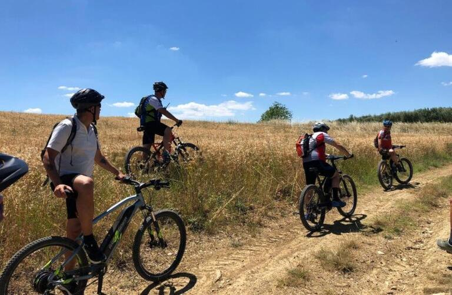

Arianna & Friends
Terre di Pisa
Guidede elsykkelturer
Sykle på rolige landeveier mellom vinmarker og små landsbyer. Velg en kort tur med kaffe eller gelato, en halvdagsopplevelse med lett lunsj eller en lengre tur med piknik.
2–7 timer
Privat guide